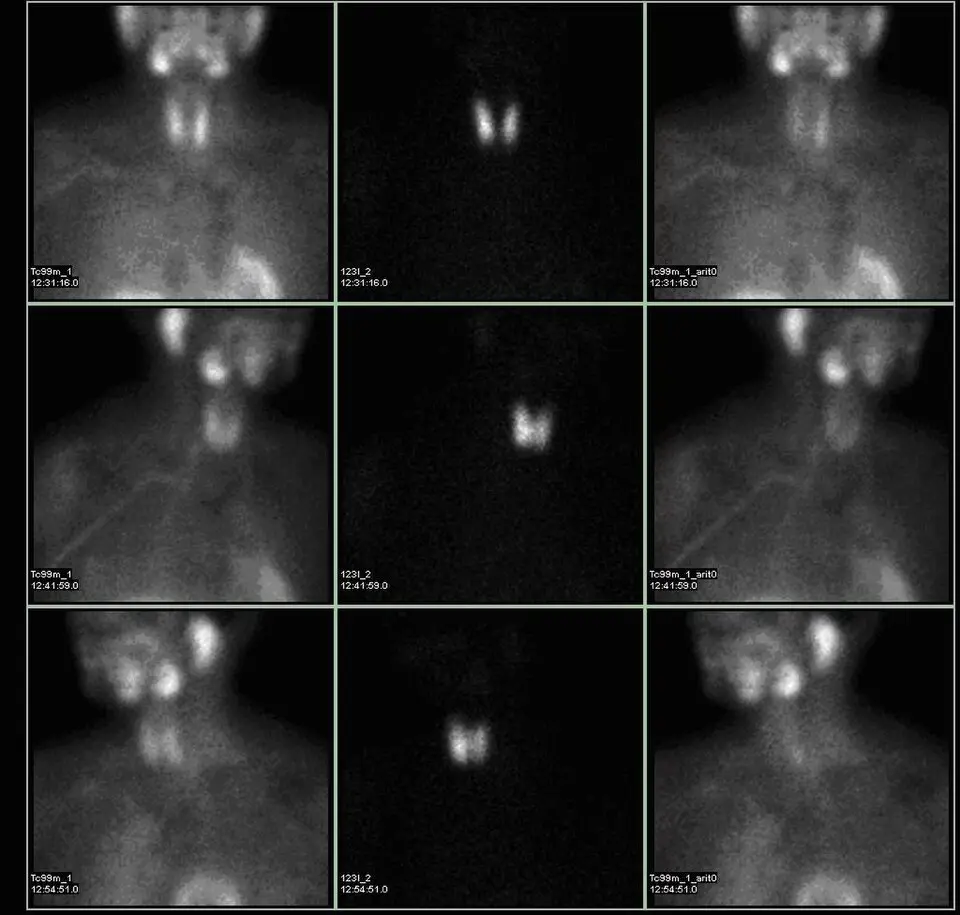

DX.5 — Hyperparathyroïdie primaire (hypercalcémie)
1. Définition et sémantique
Maladies endocriniennes, nutritionnelles et métaboliquesCIM-10, chap. IVChapitre E00-E90 : maladies des glandes endocrines et du métabolisme.
- Affections de la thyroïdeElles regroupent le goitre, l'hyperthyroïdie et l'hypothyroïdie, codés E00 à E07 dans la CIM.
- Diabète sucréIl regroupe les formes de diabète codées E10 à E14 dans la CIM.
- Autres anomalies de la régulation de la glycémie et de la sécrétion interne du pancréasElles sont codées E15 à E16 dans la CIM.
- Affections des autres glandes endocrinesElles comprennent les parathyroïdes, l'hypophyse, les surrénales et les gonades.
- MalnutritionElle est codée E40 à E46 dans la CIM.
- Autres carences nutritionnellesElles sont codées E50 à E64 dans la CIM.
- Obésité et autres excès d'apportIls sont codés E65 à E68 dans la CIM.
- Troubles du métabolismeIls sont codés E70 à E90 dans la CIM.
Affections des autres glandes endocrinesCIM-10, E20-E35Elles comprennent les parathyroïdes, l'hypophyse, les surrénales et les gonades.
- HypoparathyroïdieElle correspond au code E20 de la CIM et désigne une sécrétion insuffisante de PTH.
- Hyperparathyroïdie et autres affections parathyroïdiennesElles correspondent à une sécrétion excessive de PTH ou à une dysfonction parathyroïdienne.
- Hyperfonctionnement de l'hypophyseIl correspond au code E22 de la CIM.
- Hypofonctionnement et autres troubles de l'hypophyseIls correspondent au code E23 de la CIM.
- Syndrome de CushingIl correspond au code E24 de la CIM et désigne l'excès de cortisol.
- Troubles génito-surrénaliensIls correspondent au code E25 de la CIM.
- HyperaldostéronismeIl correspond au code E26 de la CIM et désigne l'excès d'aldostérone.
- Autres affections de la surrénaleElles correspondent au code E27 de la CIM.
- Dysfonctionnement ovarienIl correspond au code E28 de la CIM.
- Dysfonctionnement testiculaireIl correspond au code E29 de la CIM.
- Troubles de la pubertéIls correspondent au code E30 de la CIM.
- Dysfonctionnement polyglandulaireIl correspond au code E31 de la CIM.
Hyperparathyroïdie et autres affections parathyroïdiennesCIM-10, E21Elles correspondent à une sécrétion excessive de PTH ou à une dysfonction parathyroïdienne.
- Hyperparathyroïdie primaire
- Hyperparathyroïdie secondaire, non classée ailleursElle correspond au code E21.1 de la CIM et répond à une calcémie basse ou normale.
- Autres hyperparathyroïdiesElles correspondent au code E21.2 de la CIM.
- Hyperparathyroïdie, sans précisionElle correspond au code E21.3 de la CIM.
- Autres affections précisées de la parathyroïdeElles correspondent au code E21.4 de la CIM.
- Affection de la parathyroïde, sans précisionElle correspond au code E21.5 de la CIM.
Hyperparathyroïdie primaireCIM-10, E21.0
- Adénome unique
- Hyperplasie, adénomes multiples
- Carcinome parathyroïdien
L'hyperparathyroïdie primaire est une sécrétion de PTHParathormone, hormone de 84 acides aminés sécrétée par les parathyroïdes2. Elle élève la calcémie en agissant sur l'os, le rein et, indirectement, l'intestin. Normale ou élevée avec une calcémie haute, elle est inappropriée et signe une cause parathyroïdienne.2 excessive et autonome par une ou plusieurs glandes parathyroïdes. Elle cause une hypercalcémie, ou plus rarement une calcémie normale avec PTH élevée. Elle est la cause la plus fréquente d'hypercalcémie en population générale. La cause est un adénome parathyroïdienTumeur bénigne d'une seule glande ; elle cause environ 85 % des cas2. L'hyperplasie ou les adénomes multiples en causent 15 %, le carcinome moins de 1 %. dans 85 % des cas2. Cette définition suit le Fifth International Workshop on Primary Hyperparathyroidism de 20221.
Notions voisines : hyperparathyroïdie secondaireElle correspond à une sécrétion de PTH élevée en réponse à une calcémie basse ou normale (insuffisance rénale, carence en vitamine D, malabsorption). La calcémie est normale ou basse, jamais haute. Piège : confondre avec la forme primaire normocalcémique., hyperparathyroïdie tertiaireHypercalcémie par autonomisation des parathyroïdes après une hyperparathyroïdie secondaire ancienne, typiquement rénale ou par malabsorption. Le contexte clinique permet de la reconnaître., hyperparathyroïdie primaire normocalcémiquePTH élevée avec calcium total corrigé et calcium ionisé normaux, sur au moins deux mesures espacées de 3 à 6 mois2. Il faut d'abord exclure toute cause d'hyperparathyroïdie secondaire. Elle comprend la maladie rénale chronique de stade 3 ou plus et la carence en vitamine D2. Elle comprend aussi la malabsorption du calcium, le bisphosphonate et le dénosumab2., hypercalcémie hypocalciurique familialeMaladie génétique : le récepteur sensible au calcium est inactivé. Le seuil de freinage de la PTH est décalé vers le haut2. La calcémie est légèrement élevée, la calciurie basse, sans atteinte d'organe. La parathyroïdectomie ne guérit pas et est contre-indiquée., hypercalcémie maligneHypercalcémie d'un cancer : métastases ostéolytiques, sécrétion de PTHrP ou de 1,25(OH)2 vitamine D2. La PTH est freinée, ce qui la distingue de l'hyperparathyroïdie primaire. Elle évolue vite et est symptomatique. et hypercalcémie médicamenteuse (thiazidiquesDiurétiques qui augmentent la réabsorption rénale du calcium. Ils peuvent révéler ou aggraver une hypercalcémie, avec PTH parfois élevée. Elle peut persister après l'arrêt. ou Lithiofor®DCI : lithium, substance de Lithiofor® (n° 38061), est un thymorégulateur (ATC N05AN01). Il appartient au groupe des sels de lithium (ATC N05AN). Le chef de file est le lithium (Lithiofor®). Il est indiqué dans les phases aiguës et la prophylaxie de la maladie maniaco-dépressive, et en co-médication des dépressions réfractaires. La posologie AIPS de base est de ½ comprimé par jour pendant 2 jours, puis elle augmente sur une semaine jusqu'à 1 comprimé 2 fois par jour38061. La lithiémie cible est de 0,6 à 1,0 mmol/L, contrôlée 12 heures après la dernière prise38061. Il faut retenir que le lithium peut augmenter la PTH et la calcémie2. Il altère aussi la concentration des urines (polyurie, polydipsie)2. Une hypercalcémie sous lithium justifie un avis psychiatrique et endocrinien.).
2. Épidémiologie (Suisse, puis Europe)
Le chiffre européen vient d'Écosse (Tayside), 2007 à 20183. Plus de 10 % des patients atteints d'hyperparathyroïdie primaire ont une forme génétique ; ces patients sont plus jeunes et ont souvent plusieurs glandes atteintes2. Grâce au dosage automatisé de la calcémie, la plupart des cas sont asymptomatiques ou peu symptomatiques. L'enjeu de santé publique est la fracture, le calcul rénal et la surmortalité.
| Mesure épidémiologique (population, lieu, période) | Résultat de la mesure (unité indiquée dans la cellule) | Source |
|---|---|---|
| Prévalence, population générale (Écosse, 2007-2018)32 | 0,84 % (IC 0,68 à 1,02 %), de 0,71 % en 2007 à 1,02 % en 201832 | |
| Incidence stable depuis 200832 | 4 à 6 pour 10 000 personnes-années32 | |
| Âge de l'incidence | 0,59 (20-29 ans) à 12,4 (70-79 ans) pour 10 000 personnes-années32 | |
| Sexe | Femmes 72,3 % des cas, incidence 2,5 fois plus élevée ; âge moyen 65 ans32 | |
| Mortalité, comparée à des témoins appariés | HR de décès 2,05 (IC 1,97 à 2,13)32 | 4 |
| Calculs rénaux, ostéoporose, diabète | HR 3,02 ; 1,31 ; 1,394 |
3. Physiopathologie
Amorce (niveau moléculaire et cellulaire). Une prolifération clonale parathyroïdienne réduit l'expression du récepteur sensible au calciumRécepteur de la surface de la cellule parathyroïdienne. Un calcium ionisé élevé active ce récepteur et freine la sécrétion de PTH. Quand son expression baisse, le freinage devient insuffisant.. Le seuil de freinage de la PTH augmente ; la glande sécrète trop de PTH pour la calcémie.
Développement (niveau tissulaire). La PTH augmente la réabsorption rénale de calcium et diminue celle du phosphate. Elle stimule la production de 1,25(OH)2DCalcitriol, forme active de la vitamine D, produite dans le tubule proximal sous l'effet de la PTH4. Il augmente l'absorption intestinale de calcium.. Elle augmente la résorption osseuse.
Installation (niveau clinique). La calcémie monte et le phosphate baisse. Le calcium filtré excède la réabsorption : la calciurie augmente, d'où néphrolithiaseCalculs rénaux. Elle est la manifestation la plus fréquente de la maladie. Elle varie entre 5 et 55 % selon la sévérité et l'imagerie utilisée2. et néphrocalcinoseElle correspond à des dépôts de calcium dans le parenchyme rénal. Ils sont visibles à l'échographie ou à la tomodensitométrie4. Elle peut abaisser la fonction rénale.. Une acidose hyperchlorémiqueAcidose métabolique légère due à l'inhibition de la réabsorption proximale des bicarbonates par la PTH. s'installe. L'hypercalcémie rend les tubules insensibles à l'hormone antidiurétique : polyurieElle correspond à une diurèse excessive. Ici, l'hypercalcémie provoque des urines diluées abondantes et une soif compensatrice, car les tubules rénaux deviennent peu sensibles à l'hormone antidiurétique. et soif.
Maintien (niveau tissulaire). Le freinage par le calcium reste inopérant, donc l'excès persiste jusqu'à l'ablation de la glande. L'os cortical se résorbe plus que l'os trabéculaire.
Tableau de corrélation : lésion ou perturbation, exploration qui la montre, thérapeutique qui la corrige.
| Lésion ou perturbation | Exploration qui la montre | Thérapeutique qui la corrige (mécanisme) |
|---|---|---|
| Glande autonome qui sécrète trop de PTH | calcémie corrigéeCalcium total ajusté à l'albumine : calcium mesuré (mmol/L) + 0,02 × (40 − albumine en g/L)2. Elle évite de prendre une hypoalbuminémie pour une hypocalcémie. Piège : la formule est fausse en cas de perturbation acido-basique ; mesurer alors le calcium ionisé. élevée, PTH élevée ou inappropriée ; échographie cervicaleExamen de première ligne de localisation avant chirurgie. Sa sensibilité atteint 79 % pour un adénome unique, mais seulement 16 % pour deux glandes et 35 % pour quatre.2 ou scintigraphie au sestamibiScintigraphie au technétium 99m couplée à une tomographie (SPECT/CT). Sensibilité de 88 % pour une glande unique, plus basse en maladie multiglandulaire2. Elle repère les glandes ectopiques. | parathyroïdectomieAblation de la ou des glandes pathologiques. C'est le seul traitement curatif. Elle est indiquée si la maladie est symptomatique ou remplit un critère de chirurgie.1,2 : retire la source de PTH |
| Récepteur sensible au calcium peu actif | PTH inappropriée pour la calcémie | Cinacalcet Spirig HC®DCI : cinacalcet, substance de Cinacalcet Spirig HC® (n° 69216), est un calcimimétique (ATC H05BX01). Il appartient au groupe des agents antiparathyroïdiens (ATC H05B). Il active le récepteur sensible au calcium et freine la PTH. Les chefs de file sont le cinacalcet (Cinacalcet Spirig HC®, Cinacalcet Mepha) et, chez le dialysé, l'ételcalcétide, qui est injectable. Il est indiqué dans l'hyperparathyroïdie secondaire du dialysé, et dans l'hypercalcémie du cancer parathyroïdien ou de l'hyperparathyroïdie primaire quand la parathyroïdectomie n'est pas possible. La posologie AIPS initiale est de 30 mg 2 fois par jour dans l'hyperparathyroïdie primaire ou le cancer69216. On l'augmente toutes les 2 à 4 semaines selon la calcémie : 60 mg 2 fois par jour, 90 mg 2 fois par jour, puis 90 mg 3 à 4 fois par jour69216. On contrôle la calcémie dans la semaine suivant chaque changement, puis tous les 2 à 3 mois1. Il faut avaler le comprimé entier, pendant ou après un repas. Il faut retenir que le cinacalcet est contre-indiqué en cas d'hypocalcémie (risque de QT long). Pendant la grossesse, il est à éviter sauf nécessité absolue. Pendant l'allaitement, il faut cesser l'allaitement ou renoncer au traitement. Il baisse peu la PTH et n'améliore pas la densité osseuse. : active le récepteur et abaisse la calcémie |
| Résorption osseuse excessive | DXAAbsorptiométrie biphotonique à rayons X. Elle mesure la densité minérale osseuse au rachis lombaire, à la hanche et au tiers distal du radius. Le radius est le site le plus touché, le rachis le moins.2 : T-scoreÉcart-type entre la densité osseuse du patient et celle d'un adulte jeune. Un T-score inférieur ou égal à −2,5 définit l'ostéoporose2. Avant 50 ans (femme non ménopausée, homme) on utilise le Z-score. bas au radius ; fracture (évaluation des fractures vertébrales (VFA)Imagerie latérale du rachis par DXA qui dépiste les fractures vertébrales silencieuses2. Une fracture vertébrale est une indication de chirurgie.) | Fosamax®DCI : alendronate, substance de Fosamax® 70 mg (n° 55475), est un bisphosphonate oral (ATC M05BA04)55475. Il appartient au groupe des bisphosphonates (ATC M05B). Les chefs de file sont l'alendronate (Fosamax®), le risédronate, l'ibandronate et l'acide zolédronique (Aclasta®). Il est indiqué dans l'ostéoporose de la femme ménopausée et de l'homme. La posologie AIPS est de 70 mg une fois par semaine, au lever, au moins une demi-heure avant le premier repas, avec un grand verre d'eau du robinet55475. Le patient reste debout ou assis 30 minutes55475. On associe du calcium et de la vitamine D si l'apport est insuffisant. Il faut retenir qu'il ne faut pas le donner en cas d'hypocalcémie. Il n'est pas recommandé, et l'AIPS le contre-indique, si la clairance de la créatinine est inférieure à 30 mL/min55475. Il est contre-indiqué pendant la grossesse et l'allaitement. ou Prolia®DCI : dénosumab, substance de Prolia® 60 mg (n° 60210), est un anticorps monoclonal anti-RANKL (ATC M05BX04)60210. Il appartient au groupe des inhibiteurs de la résorption osseuse (ATC M05B). Il inhibe la différenciation des ostéoclastes. Le chef de file est le dénosumab (Prolia®). Il est indiqué dans l'ostéoporose de la femme ménopausée et de l'homme à risque de fracture, et dans la perte osseuse sous inhibiteurs de l'aromatase ou privation androgénique. La posologie AIPS est de 60 mg en une injection sous-cutanée tous les 6 mois, avec calcium et vitamine D suffisants09395. Il faut retenir le risque d'hypocalcémie, surtout si la clairance de la créatinine est inférieure à 30 mL/min09395. Pendant la grossesse, il n'est utilisé qu'en cas de nécessité absolue. Pendant l'allaitement, il n'est pas recommandé. : inhibent les ostéoclastes ; chirurgie |
| Hypercalciurie, calculs | calciurie de 24 heuresCalcium urinaire total sur 24 h2. Il dépasse 250 milligrammes (6,2 mmol) chez la femme et 300 milligrammes (7,5 mmol) chez l'homme dans l'hypercalciurie2. Elle est une indication de chirurgie.2 ; échographie ou tomodensitométrie rénale | Chirurgie ; hydratation ; éviter les thiazidiques qui retiennent le calcium |
| Hypovolémie et hypercalcémie sévère | Créatininémie, ECG avec QT courtRaccourcissement de l'intervalle QT de l'électrocardiogramme : l'hypercalcémie raccourcit la phase de plateau du potentiel d'action. Une hypercalcémie sévère peut donner des arythmies. | NaCl 0,9 %DCI : chlorure de sodium, substance de NaCl 0,9 % (n° 41181), est un soluté de remplissage isotonique (ATC B05BB01)41181. Il appartient au groupe des solutions d'électrolytes (ATC B05BB). Les chefs de file sont le chlorure de sodium 0,9 % et le Ringer-lactate, qui contient du calcium et qu'il faut éviter ici41181. Il est indiqué dans le remplacement liquidien isotonique, la déshydratation hypotonique ou isotonique et la perte sodée. La posologie AIPS est de 500 mL à 3 litres par 24 heures chez l'adulte dans la déshydratation extracellulaire isotonique41181. Le volume et le débit s'adaptent à l'état clinique et aux paramètres de laboratoire. En hypercalcémie, le clinicien doit régler le volume sur la diurèse et sur la tolérance cardiaque. Il faut retenir de surveiller les signes de surcharge (œdème pulmonaire) chez le cardiaque et l'insuffisant rénal. puis Miacalcic®DCI : calcitonine de saumon, substance de Miacalcic® ampoules (n° 38605), est une hormone hypocalcémiante (ATC H05BA01). Elle appartient au groupe des agents antiparathyroïdiens (ATC H05B). Elle inhibe la résorption osseuse. Le chef de file est la calcitonine de saumon (Miacalcic®). Elle est indiquée dans la prévention de la perte osseuse aiguë, la maladie de Paget, l'hypercalcémie et la crise hypercalcémique (dont l'hyperparathyroïdie), et l'algodystrophie. En crise hypercalcémique, la posologie AIPS est une perfusion de 5 à 10 UI/kg dans 500 mL de solution physiologique, en au moins 6 heures par jour38605. On peut aussi donner 2 à 4 injections intraveineuses lentes38605. En hypercalcémie chronique, la posologie est de 5 à 10 UI/kg par jour en 1 ou 2 injections sous-cutanées ou intramusculaires38605. La durée du traitement doit être la plus courte possible, en raison du risque de tumeurs malignes. Il faut retenir que l'effet est rapide, mais qu'un échappement survient en quelques jours. Pendant la grossesse, la prudence s'impose. Pendant l'allaitement, elle est déconseillée. (inhibe la résorption) ou Zometa®DCI : acide zolédronique, substance de Zometa® 4 mg/5 ml (n° 56257), est un bisphosphonate (ATC M05BA08)56257. Il appartient au groupe des bisphosphonates (ATC M05B). Il inhibe les ostéoclastes. Les chefs de file sont l'acide zolédronique (Zometa®, Aclasta®), l'alendronate (Fosamax®) et le pamidronate. Il est indiqué dans l'hypercalcémie maligne (calcémie corrigée supérieure à 12 mg/dL, soit 3,0 mmol/L), les métastases osseuses et le myélome562575736355475. L'hyperparathyroïdie primaire n'est pas une indication AIPS de Zometa. La posologie AIPS est de 4 mg dilués dans 100 mL de NaCl 0,9 % ou de glucose 5 %, en perfusion intraveineuse unique d'au moins 15 minutes41181. Il faut hydrater avant la perfusion. On mesure la créatininémie avant chaque dose. Il ne faut pas le mélanger avec une solution contenant du calcium. Il faut retenir qu'il est contre-indiqué pendant la grossesse et l'allaitement. Il est déconseillé si la clairance de la créatinine est inférieure à 30 mL/min56257. |
4. Démarche diagnostique
Étape 1. Il faut exclure d'abord les drapeaux rouges (🚩 = menace vitale ou perte de chance).
| Drapeau | Signe ou examen qui tranche | Piège | Conduite immédiate |
|---|---|---|---|
| 🚩 crise hypercalcémiqueUrgence : calcémie supérieure à 14 mg/dL (3,5 mmol/L), avec oligurie ou anurie, somnolence et coma2. Elle impose une réhydratation immédiate et un avis spécialisé.2 | Calcémie supérieure à 3,5 mmol/L, oligurie, somnolence2 | Attribuer la confusion à l'âge | Hospitaliser, réhydrater, calcitonine ou bisphosphonate |
| 🚩 Atteinte du rythmeL'hypercalcémie sévère raccourcit le QT et peut provoquer des arythmies. Un ECG est nécessaire si la calcémie est très haute. | ECG : QT court, bradycardie | Associer digoxine et hypercalcémie | Scope, ECG, correction de la calcémie |
| 🚩 Insuffisance rénale aiguëPerte de filtration due à la déshydratation et à la vasoconstriction rénale de l'hypercalcémie. Rénale, elle empêche d'éliminer le calcium. | Créatininémie, diurèse | Oublier de réhydrater avant tout diurétique | Réhydratation, avis de néphrologie |
| 🚩 Hypercalcémie maligneCalcémie souvent très haute et rapidement progressive ; PTH freinée ; perte de poids. Voir le chapitre « Hypercalcémie maligne ». | PTH basse, PTHrP, masse, perte de poids | Prendre une hypercalcémie rapide pour une forme primaire | Bilan oncologique, bisphosphonate |
| 🚩 Carcinome parathyroïdienCause moins de 1 % des cas2. Suspecter une calcémie très élevée avec masse cervicale palpable. | Masse cervicale dure, calcémie très haute | Biopsie à l'aiguille : risque d'ensemencement | Chirurgie spécialisée |
| 🚩 pancréatiteInflammation aiguë du pancréas ; l'hypercalcémie sévère peut la déclencher. Elle justifie un dosage de la calcémie si la cause n'est pas évidente. | Douleur épigastrique, lipase élevée | Ne pas doser la calcémie | Hospitalisation, correction de la calcémie |
🚩 Règle d'or : toute hypercalcémie supérieure à 3,5 mmol/L ou symptomatique impose l'hospitalisation et une réhydratation immédiate2.
Quatre diagnostics se discutent d'abord, car leur conduite diffère2.
| Diagnostic | Élément qui tranche | Piège | Conduite si le résultat est positif |
|---|---|---|---|
| Hyperparathyroïdie primaire | Calcémie corrigée haute avec PTH élevée ou inappropriée, sur deux mesures espacées d'au moins 2 semaines2 | Croire qu'une PTH normale exclut la maladie | Évaluer le retentissement, puis décider de la chirurgie |
| Hypercalcémie hypocalciurique familiale | Rapport de clairance calcium sur créatinine inférieur à 0,012 | Zone grise entre 0,01 et 0,02 chez environ 40 % des patients2 | Ne pas opérer ; demander un avis génétique2 |
| Hypercalcémie maligne ou granulomatose | PTH freinée ; PTHrP ; sarcoïdose ou tuberculose2 | Prendre une hypercalcémie rapide pour une forme primaire | Bilan oncologique ou de la granulomatose |
| Hyperparathyroïdie secondaire ou forme normocalcémique | Calcémie normale avec PTH élevée2 | Confondre les deux formes | Exclure d'abord les causes secondaires, puis contrôler à 3 à 6 mois2 |
Étape 2. En l'absence de drapeau rouge, il faut suivre ces étapes.
- Il faut confirmer l'hypercalcémie sur une calcémie corrigée répétée à au moins 2 semaines d'intervalle2.
- Il faut doser la PTH. Une PTH élevée ou normale avec calcémie haute oriente vers une cause parathyroïdienne.
- Si la PTH est freinée : chercher cancer, sarcoïdose et tuberculoseGranulomatoses qui produisent de la 1,25(OH)2 vitamine D2. La calcémie est haute avec une PTH freinée., vitamine D en excès, immobilisation.
- Si la PTH est élevée : exclure hypercalcémie hypocalciurique familiale par le rapport de clairance calcium sur créatinineIl se calcule sur urine de 24 h2. La formule est : calciurie × créatininémie ÷ (calcémie × créatininurie). Inférieur à 0,01 il évoque l'hypercalcémie hypocalciurique familiale, supérieur à 0,02 l'hyperparathyroïdie primaire2. Zone grise entre 0,01 et 0,02 : environ 40 % des patients., et les thiazidiques ou le Lithiofor®2.
- Évaluer le retentissement : DFGeDébit de filtration glomérulaire estimé à partir de la créatininémie. Un DFGe inférieur à 60 mL/min est une indication opératoire1., calciurie de 24 heures, DXA, évaluation des fractures vertébrales (VFA).
- Il faut décider de la parathyroïdectomie ou de la surveillance.
5. Anamnèse ciblée et drapeaux rouges
| Question clé | Raison physiopathologique |
|---|---|
| Soif, urines abondantes, nycturie ? | L'hypercalcémie provoque une polyurie qui entraîne la soif. |
| Coliques néphrétiques, calculs ? | L'hypercalciurie favorise la néphrolithiase2. |
| Fractures, douleurs osseuses, perte de taille ? | La PTH accélère la résorption osseuse. |
| Fatigue, faiblesse des jambes, humeur, mémoire ? | La myopathie proximaleFaiblesse des ceintures, des cuisses surtout. Le patient se lève mal d'une chaise. Elle régresse après correction de la calcémie. et les signes neurocognitifs suivent l'hypercalcémie. |
| Nausées, constipation, douleurs abdominales ? | Les troubles digestifsAnorexie, nausées, vomissements, constipation, douleurs abdominales, ulcère peptique, cholélithiase. Ils sont causés par l'hypercalcémie qui ralentit les muscles lisses. viennent de la baisse du tonus des muscles lisses. |
| Médicaments : Esidrex®DCI : hydrochlorothiazide, substance de Esidrex® (n° 24958), est un diurétique thiazidique (ATC C03AA03). Il appartient au groupe des thiazidiques (ATC C03A). Les chefs de file sont l'hydrochlorothiazide (Esidrex®), la chlortalidone et l'indapamide. Il est indiqué dans l'hypertension, l'insuffisance cardiaque, les œdèmes, le diabète insipide néphrogénique et l'hypercalciurie idiopathique. La posologie AIPS est de 25 à 50 mg par jour le matin dans l'hypertension, et de 25 à 75 mg par jour dans les œdèmes24958. Il faut retenir qu'il réduit l'excrétion urinaire de calcium et peut démasquer ou aggraver une hypercalcémie24958. Pendant la grossesse, il faut l'éviter sauf nécessité. Pendant l'allaitement, il faut l'éviter., Lithiofor®, vitamine D, calcium ? | Ils élèvent la calcémie ou la PTH ; les arrêter peut corriger le diagnostic2. |
| Antécédents familiaux d'hypercalcémie, de calculs, de tumeur endocrine ? | Orienter vers une forme génétique (néoplasie endocrinienne multiple (MEN)Syndromes familiaux (MEN1, MEN2A, MEN4) avec atteinte de plusieurs glandes parathyroïdiennes. Ils imposent une exploration bilatérale du cou et une chirurgie plus large., hypercalcémie hypocalciurique familiale). |
| Perte de poids, tabac, toux, antécédent de cancer ? | Une cause maligne freine la PTH. |
| Cou : irradiation, chirurgie cervicale ? | Fait suspecter une hyperplasie ou une récidive. |
🚩 Les drapeaux rouges sont la confusion, les vomissements, l'oligurie et la syncope, car ils annoncent une urgence immédiate. Il faut donc hospitaliser, demander ECG et créatininémie, puis demander un avis d'endocrinologie ou de néphrologie. Une masse cervicale dure impose une échographie cervicale et un avis chirurgical. Une fracture ou un calcul impose l'imagerie ciblée.
6. Examen physique ciblé, région par région
Le normal est décrit d'abord. L'examen cherche la déshydratation, le retentissement osseux et rénal, et élimine une cause maligne. La valeur diagnostique de ces signes reste qualitative, car ils orientent sans confirmer.
| Région | Normal attendu | Pathologique | Technique | Valeur et piège |
|---|---|---|---|---|
| Signes vitaux | Pouls et tension stables couché et debout. | hypertension artérielleFréquente dans la maladie. Elle peut se normaliser en partie après la correction de la calcémie, sans que ce soit une indication opératoire.2, tachycardie ou bradycardie, hypotension orthostatiqueBaisse de la pression systolique d'au moins 20 mmHg ou de la diastolique d'au moins 10 mmHg après 3 minutes de station debout. Elle trahit une déshydratation.. | Mesurer la tension couché puis après 3 minutes debout ; compter le pouls 30 secondes2. | L'hypotension orthostatique signe la déshydratation. Piège : l'hypertension n'est pas spécifique. |
| Hydratation | Muqueuses humides, pli cutané qui s'efface vite. | Muqueuses sèches, pli persistant. | Pincer la peau du dos de la main, regarder la langue. | Valeur modérée chez le sujet âgé. Piège : le pli est peu fiable après 65 ans2. |
| Cou | Thyroïde et région cervicale non palpables. | Masse cervicale dure. | Palper depuis l'arrière, le patient avalant une gorgée d'eau. | L'adénome bénin n'est presque jamais palpable ; une masse dure évoque un carcinome. Piège : une masse thyroïdienne n'est pas parathyroïdienne. |
| Squelette | Taille stable, rachis indolore. | Cyphose, douleur osseuse à la pression. | Percuter chaque épineuse, mesurer la taille et la comparer à la plus ancienne. | Une perte de taille évoque une fracture non traumatiqueFracture survenue sans traumatisme adéquat, surtout vertébrale ou de l'avant-bras. Le risque de fracture double (rapport de cotes 2,01).2 vertébrale. Piège : l'ostéoporose peut exister sans douleur. |
| Muscles | Se lève d'une chaise sans les mains. | Se lève avec difficulté (myopathie proximale). | Demander cinq levers d'une chaise sans appui, croisés les bras. | Signe sensible de la myopathie hypercalcémique. Piège : l'attribuer à l'âge. |
| Abdomen et reins | Souple, indolore, loges rénales indolores. | Douleur épigastrique, douleur lombaire. | Palper, puis percuter chaque fosse lombaire du poing. | Évoque pancréatite, ulcère ou colique néphrétique. Piège : douleur lombaire sans fièvre ne suffit pas à confirmer un calcul. |
| Yeux | Cornée transparente. | kératopathie en bandeDépôt calcaire en bande horizontale sur la cornée, vu à la lampe à fente. Il signe une hypercalcémie ancienne. Piège : signe rare, son absence n'exclut rien.. | Lampe à fente. | Signe d'hypercalcémie chronique, rare ; son absence n'exclut rien. |
| Neuropsychique | Orienté, attentif, humeur stable. | Confusion, dépression, somnolence. | Poser des questions d'orientation, évaluer l'attention. | Signes de gravité de l'hypercalcémie. Piège : ils ne sont pas une indication opératoire en soi2. |
7. Approche syndromique
Chaque tableau distingue les signes fonctionnels, que le patient rapporte, et les signes physiques, que le clinicien constate à l'examen.
7.1 Syndrome d'hypercalcémie.
| Type | Signe | Recherche | Mécanisme |
|---|---|---|---|
| Fonctionnel | polyurie et soif | Interroger diurèse et nycturie. | Insensibilité tubulaire à l'hormone antidiurétique. |
| Fonctionnel | troubles digestifs | Interroger transit et appétit. | Baisse du tonus lisse. |
| Physique | Déshydratation, hypotension orthostatique | Tension couché-debout. | Perte hydrique urinaire. |
| Physique | QT court | ECG. | Raccourcissement du plateau du potentiel d'action. |
7.2 Syndrome osseux.
| Type | Signe | Recherche | Mécanisme |
|---|---|---|---|
| Fonctionnel | Douleurs osseuses, fractures | Interroger fractures antérieures. | Résorption excessive, surtout de l'os corticalOs compact des diaphyses et du tiers distal du radius ; il est plus touché que l'os trabéculaire (rachis) dans cette maladie.. |
| Physique | Perte de taille, cyphose | Mesure de la taille, percussion rachis. | Tassement vertébral. |
| Physique | ostéite fibrokystiqueAtteinte osseuse sévère et rare (2 à 5 % des patients) : résorption sous-périostée, kystes, tumeurs brunes2. Aujourd'hui rare dans les pays qui dosent systématiquement la calcémie., tumeur bruneLésion osseuse kystique remplie de tissu fibreux et d'hémosidérine, due à une résorption osseuse intense. Piège : la prendre pour une métastase. | Radiographie des mains et du crâne. | Résorption sous-périostée et kystes. |
7.3 Le syndrome lithiasique rénal associe ces signes2.
| Type | Signe | Recherche | Mécanisme |
|---|---|---|---|
| Fonctionnel | Colique néphrétique, hématurie | Interroger douleur lombaire irradiée. | néphrolithiase due à la calciurie de 24 heures. |
| Physique | Douleur de la loge rénale | Percussion lombaire. | Obstruction et distension des voies urinaires. |
| Physique | néphrocalcinose | Échographie ou tomodensitométrie. | Dépôts parenchymateux, baisse du DFGe2. |
7.4 Le syndrome neuromusculaire et neuropsychique associe ces signes2.
| Type | Signe | Recherche | Mécanisme |
|---|---|---|---|
| Fonctionnel | Fatigue, dépression, troubles de la mémoire | Interrogatoire, échelles de dépression. | Effet de l'hypercalcémie sur le système nerveux. |
| Physique | myopathie proximale | Test du lever de chaise. | Atteinte musculaire proximale. |
7.5 Crise hypercalcémique. Elle associe oligurie, somnolence et coma2 ; voir crise hypercalcémique et le point 11.
8. Diagnostic positif et critères
Le diagnostic est biochimique. Il repose sur une calcémie corrigée élevée avec PTH élevée ou inappropriée, sur deux mesures espacées d'au moins 2 semaines2.
| Critère | Seuil | Usage |
|---|---|---|
| Forme hypercalcémique | Calcémie corrigée supérieure à 2,55 mmol/L avec PTH élevée ou inappropriée3 | Diagnostic posé ; décider de la chirurgie |
| Forme normocalcémique | PTH élevée, calcium total et ionisé normaux, deux fois sur 3 à 6 mois2 | Exclure d'abord la cause secondaire |
| Ce qui ne suffit pas | PTH isolée, ou résultat d'imagerie de localisation | L'imagerie ne pose ni n'écarte le diagnostic |
Critères de chirurgie chez l'asymptomatique (Fifth International Workshop, 2022). Un seul suffit1,2.
| Domaine | Critère |
|---|---|
| Calcémie | Plus de 1 mg/dL (0,25 mmol/L) au-dessus de la limite supérieure1 |
| Os | Fracture vertébrale à l'imagerie, ou T-score inférieur ou égal à −2,5 (rachis, hanche, radius) |
| Rein | DFGe inférieur à 60 mL/min, calcul ou néphrocalcinose, calciurie de 24 heures supérieure à 250 milligrammes (femme) ou 300 milligrammes (homme) |
| Âge | Moins de 50 ans2 |
Les signes neurocognitifs, la qualité de vie et les signes cardiovasculaires ne sont pas des indications de chirurgie.
9. Examens complémentaires
9.a Gold standard. Aucun test unique n'existe2. Le diagnostic est clinique et biochimique (calcémie corrigée et PTH). Pour la lithiase rénale, la tomodensitométrie est la référence.
9.b Première intention. Il faut prescrire : calcémie corrigée, calcium ioniséFraction libre et active du calcium plasmatique2. Elle est mesurée sur sang hépariné, sans garrot prolongé. Elle sert surtout à confirmer une forme normocalcémique.2 si la calcémie est normale, PTH intacte, phosphate, créatininémie et DFGe, 25(OH)D25-hydroxyvitamine D, forme circulante qui reflète le statut en vitamine D2. Les recommandations visent plus de 30 ng/mL (75 nmol/L) et moins de 50 ng/mL2., calciurie de 24 heures, DXA au rachis, à la hanche et au radius. Les valeurs de référence de calcium et de phosphate dépendent du laboratoire.
| Résultat (SI) | Signification | Conduite |
|---|---|---|
| Calcémie corrigée supérieure à 2,55 mmol/L, PTH élevée2 | Hyperparathyroïdie primaire probable | Calculer le rapport de clairance calcium sur créatinine ; évaluer le retentissement |
| Calcémie haute, PTH normale | Inappropriée : toujours en faveur d'une cause parathyroïdienne | Même conduite que ci-dessus |
| Calcémie haute, PTH basse | Cause non parathyroïdienne : cancer, granulomatose, vitamine D | Doser PTHrP, bilan oncologique |
| Calcémie normale, PTH élevée | Secondaire ou forme normocalcémique | Chercher carence en vitamine D, maladie rénale, médicaments |
| Rapport de clairance inférieur à 0,01 ; supérieur à 0,022 | Hypocalciurique familiale ; primaire | Entre 0,01 et 0,02 : génétique2 |
| 25(OH)D inférieure à 25 nmol/L2 | Carence grave2 | Corriger sous contrôle de la calcémie |
9.c Alternatives (localisation avant chirurgie seulement). L'imagerie ne pose pas le diagnostic2.
| Examen | Quand | Performance ou limite de l'examen |
|---|---|---|
| échographie cervicale | Première ligne, sans rayonnement ; grossesse possible | Sensibilité 79 % pour un adénome2 |
| scintigraphie au sestamibi | Si l'échographie est négative ou en cas de glande ectopique | Sensibilité 88 % pour une glande unique2 |
| tomodensitométrie 4DTomodensitométrie cervicale à plusieurs phases après injection de produit de contraste iodé. Troisième méthode recommandée, de disponibilité limitée. | Troisième méthode ; contre-indiquée en cas d'allergie aux produits iodés ou si le DFGe est inférieur à 30 mL/min2 | Disponibilité limitée |
| PET à la fluorocholineTomographie par émission de positons avec de la fluorocholine marquée au fluor 18, ou de la méthionine marquée au carbone 112. Très sensible, mais coûteuse et peu disponible : méthode de seconde intention. | Seconde intention | Très sensible, coûteuse |
| IRMImagerie par résonance magnétique : alternative sans rayonnement ni iode pour localiser une glande, de sensibilité inférieure aux méthodes recommandées. Elle est exclue en cas de dispositif non compatible. | Alternative sans iode ni rayonnement ; exclue si dispositif non compatible | Moins sensible |
La scintigraphie par soustraction au sestamibi est l'une des deux méthodes principales de localisation, avec l'échographie cervicale2.
Scintigraphie parathyroïdienne par soustraction. Ces planches de médecine nucléaire sont prises en projection cervicale antérieure. À gauche, le sestamibi marqué au technétium se fixe sur la thyroïde et les glandes salivaires. Au milieu, l'iode radioactif se fixe seulement sur la thyroïde. À droite, l'image de soustraction élimine la thyroïde. Les trois rangées correspondent à trois temps d'acquisition.

Lisez d'abord seul ce cliché (scintigraphie parathyroïdienne par soustraction) : cherchez vous-même le signe.
La copie annotée montre les repères décrits ci-dessous.
- Colonne de gauche : le sestamibi se fixe sur la thyroïde, normale, et sur les glandes salivaires, en haut de l'image.
- Colonne du milieu : l'iode radioactif dessine seulement la thyroïde ; il sert de masque à soustraire.
- Colonne de droite : après soustraction de la thyroïde, un foyer résiduel de sestamibi oriente vers une glande parathyroïde hyperfonctionnelle.
- Les glandes salivaires et la thyroïde fixent aussi le sestamibi : un foyer isolé ne suffit pas.
- L'imagerie localise la glande avant la chirurgie ; elle ne pose ni n'écarte le diagnostic.
Ce que l'image décide. Une localisation concordante permet à l'\''opérateur de choisir une chirurgie ciblée ; une imagerie négative n'\''écarte pas l'\''indication opératoire (point 8 et point 11).
9.d Deuxième intention. Il faut envisager un dépistage génétiqueÀ envisager avant 30 ans, en cas de maladie multiglandulaire ou d'antécédents familiaux d'hypercalcémie2. Le résultat change la chirurgie. Il faut aussi doser la PTHrP et rechercher un cancer si la PTH est basse2. Il faut demander une radiographie des mains en cas de suspicion d'ostéite fibrokystique. Le critère de passage est l'absence d'adénome clair ou une récidive après chirurgie.
Quatre cas de figure se présentent. Le cas positif associe calcémie et PTH hautes. Le cas négatif associe calcémie normale et PTH normale : il exclut la maladie. Le cas limite associe PTH élevée et calcémie normale : il évoque la forme hyperparathyroïdie primaire normocalcémique. Le cas discordant associe une imagerie négative et une biologie positive : la chirurgie reste indiquée2.
10. Arbre décisionnel
- Si calcémie corrigée supérieure à 3,5 mmol/L, oligurie ou confusion → crise hypercalcémique : hospitaliser et réhydrater (point 11.B)2.
- Sinon, si calcémie haute et PTH basse → cause non parathyroïdienne : PTHrP, bilan oncologique.
- Sinon, si calcémie haute et PTH élevée ou normale → il faut exclure thiazidiques, Lithiofor® et hypercalcémie hypocalciurique familiale.
- Si le rapport de clairance calcium sur créatinine est supérieur à 0,02 ou le diagnostic confirmé → hyperparathyroïdie primaire : évaluer le retentissement2.
- Si symptomatique, ou un critère de chirurgie présent → adresser au chirurgien endocrinien.
- Si le patient est asymptomatique et sans critère → surveiller (calcémie annuelle, densitométrie tous les 1 à 2 ans)2.
- Si calcémie normale et PTH élevée → il faut exclure l'hyperparathyroïdie secondaire, puis évoquer la forme hyperparathyroïdie primaire normocalcémique2.
11. Prise en charge selon les recommandations suisses
11.A But thérapeutique. Le traitement vise à normaliser la calcémie en quelques jours lors d'une crise, puis à prévenir la fracture et le calcul rénal à long terme1. La chirurgie vise la normocalcémie. En revanche, sans chirurgie, la surveillance accepte une calcémie corrigée qui reste à moins de 1 mg/dL (0,25 mmol/L) au-dessus de la limite supérieure1,2. Un dépassement de ce seuil pose l'indication opératoire1,2.
11.B Moyens.
Situation d'urgence (crise hypercalcémique), dans l'ordre.
- Il faut d'abord poser un scope et une voie veineuse, puis demander un ECGÉlectrocardiogramme de repos. Il montre un QT court, un bloc ou des arythmies en cas d'hypercalcémie sévère.2, une créatininémie et un ionogramme.
- réhydratationElle consiste en une perfusion de chlorure de sodium isotonique. Elle corrige l'hypovolémie, restaure la filtration rénale et augmente l'élimination urinaire de calcium. Elle précède tout autre traitement. : NaCl 0,9 %DCI : chlorure de sodium, substance de NaCl 0,9 % (n° 41181), est un soluté de remplissage isotonique (ATC B05BB01)41181. Il appartient au groupe des solutions d'électrolytes (ATC B05BB). Les chefs de file sont le chlorure de sodium 0,9 % et le Ringer-lactate, qui contient du calcium et qu'il faut éviter ici41181. Il est indiqué dans le remplacement liquidien isotonique, la déshydratation hypotonique ou isotonique et la perte sodée. La posologie AIPS est de 500 mL à 3 litres par 24 heures chez l'adulte dans la déshydratation extracellulaire isotonique41181. Le volume et le débit s'adaptent à l'état clinique et aux paramètres de laboratoire. En hypercalcémie, le clinicien doit régler le volume sur la diurèse et sur la tolérance cardiaque. Il faut retenir de surveiller les signes de surcharge (œdème pulmonaire) chez le cardiaque et l'insuffisant rénal..
- Il faut perfuser Miacalcic® : 5 à 10 UI/kg par jour dans 500 mL de solution physiologique en au moins 6 heures38605.
- Zometa® : 4 mg intraveineux en 15 minutes si la calcémie corrigée est supérieure à 3,0 mmol/L56257. L'indication AIPS est l'hypercalcémie maligne ; dans l'hyperparathyroïdie primaire c'est hors indication56257.
- Lasix®DCI : furosémide, substance de Lasix® comprimés (n° 30629), est un diurétique de l'anse (ATC C03CA01). Il appartient au groupe des diurétiques de l'anse (ATC C03C). Les chefs de file sont le furosémide (Lasix®), le torasémide et le bumétanide. Il est indiqué dans les œdèmes cardiaques, hépatiques, rénaux ou les brûlures, et dans l'hypertension légère à moyenne. L'hypercalcémie ne constitue pas une indication AIPS. La posologie AIPS de l'adulte est de ½ à 2 comprimés par jour au début, puis de ½ à 1 comprimé par jour en entretien30629. Le maximum est de 1500 mg par jour30629. En hypercalcémie, l'emploi est hors indication, après réhydratation et seulement en cas de surcharge. Il faut retenir le risque d'hypokaliémie et de déshydratation, qui aggrave l'hypercalcémie. Pendant la grossesse, il n'est utilisé qu'en cas de nécessité absolue. Pendant l'allaitement, il est déconseillé. seulement après réhydratation et en cas de surcharge (hors indication AIPS).
- dialyseDernier recours de l'hypercalcémie sévère avec insuffisance rénale, quand la réhydratation et les médicaments échouent. Elle abaisse rapidement le calcium. est indiquée si l'insuffisance rénale est sévère ou si les mesures précédentes échouent.
- Traiter la cause : parathyroïdectomie en urgence si l'hyperparathyroïdie est confirmée2.
Hors urgence, il faut agir dans l'ordre.
- Mesures générales : il faut boire suffisamment, éviter les thiazidiques et le lithium, et ne pas restreindre le calcium alimentaire (800 à 1000 milligrammes par jour)1.
- La parathyroïdectomie est le seul traitement curatif1,2. Elle est indiquée si un symptôme ou un critère du point 8 existe. Elle impose une exploration bilatérale en cas de néoplasie endocrinienne multiple (MEN). Elle est contre-indiquée en cas d'hypercalcémie hypocalciurique familiale1,2.
- Pharmacologique si pas de chirurgie : Cinacalcet Spirig HC® (si calcémie supérieure à 0,25 mmol/L au-dessus de la limite) ; Fosamax® ou Prolia® pour la densité osseuse554756021069216.
- Vitamine D : il faut viser une 25(OH)D supérieure à 30 ng/mL (75 nmol/L)2. Le produit Vi-De 3®DCI : cholécalciférol, substance de Vi-De 3® (n° 09395), est une vitamine (ATC A11CC05)09395. Il appartient au groupe des vitamines D et analogues (ATC A11C). Les chefs de file sont le cholécalciférol (Vi-De 3®), l'ergocalciférol et le calcifédiol09395. Il est indiqué dans la prophylaxie et le traitement du rachitisme, la prophylaxie du déficit en vitamine D, l'ostéomalacie et la carence grave avérée (25(OH)D inférieure à 25 nmol/L)09395. Chez l'adulte avec carence grave, la posologie AIPS est de 15 à 20 gouttes par jour (1500 à 2000 UI)09395. En prévention chez l'adulte, elle est de 6 gouttes (600 UI) de 19 à 59 ans, et de 8 gouttes (800 UI) au-delà de 60 ans09395. Pendant la grossesse ou l'allaitement, elle est de 6 gouttes09395. Il faut retenir que l'AIPS contre-indique : « Vi-De 3 ne doit pas être pris en cas d'hypercalcémie et/ou d'hypercalciurie »09395. Le médecin spécialiste doit décider de la supplémentation avant chirurgie ou sous surveillance de la calcémie. Pendant la grossesse, jusqu'à 600 UI par jour sont sans risque connu09395. est contre-indiqué en cas d'hypercalcémie selon l'AIPS : avis spécialisé et contrôle de la calcémie.
- Non pharmacologique : le patient pratique une activité physique, évite l'immobilisation prolongée et boit régulièrement.
Situations spéciales. Grossesse : Cinacalcet Spirig HC®, Zometa® , Fosamax® et Prolia® sont à éviter (contre-indiqués ou « sauf nécessité absolue » selon l'AIPS)56257554756021069216. La chirurgie se discute avec un avis spécialisé. Allaitement : cesser l'allaitement ou renoncer au cinacalcet. Insuffisance rénale : Aclasta®DCI : acide zolédronique, substance de Aclasta® 5 mg (n° 57363), est un bisphosphonate (ATC M05BA08)5736356257. Il appartient au groupe des bisphosphonates (ATC M05B). Les chefs de file sont l'acide zolédronique (Aclasta®), l'alendronate (Fosamax®) et l'ibandronate. Il est indiqué dans l'ostéoporose de la femme ménopausée et de l'homme, la prévention des fractures après fracture du col, l'ostéoporose cortisonique et la maladie de Paget. La posologie AIPS est de 5 mg en perfusion intraveineuse d'au moins 15 minutes, une fois par an dans l'ostéoporose5736356257. Il faut associer du calcium et de la vitamine D adéquats. Il faut retenir qu'il est contre-indiqué pendant la grossesse et l'allaitement. est contre-indiqué si la clairance de la créatinine est inférieure à 35 mL/min2. Sujet âgé : il n'y a pas d'adaptation du cinacalcet. Chez l'enfant, le traitement médicamenteux n'est pas recommandé.
Social et professionnel. La LAMalElle est la loi fédérale sur l'assurance-maladie. L'assurance de base obligatoire prend en charge la chirurgie, les examens et les médicaments de la liste des spécialités, avec franchise et quote-part. couvre la chirurgie et les examens. Un arrêt de travail est de courte durée après chirurgie. La LAILoi fédérale sur l'assurance-invalidité : elle intervient en cas d'incapacité durable de travail ou de gain. intervient en cas d'incapacité durable. Il n'y a pas de restriction de conduite en dehors de la confusion.
11.C Surveillance. Après chirurgie : calcémie à 24 à 48 heures, hypocalcémie postopératoireBaisse de la calcémie après l'ablation de l'adénome : les glandes restantes sont freinées22. Les signes sont des paresthésies péribuccales, des crampes et une tétanie. Le patient doit connaître ces signes.2 possible ; le patient doit connaître les paresthésies, crampes et la tétanie. Sous Cinacalcet Spirig HC®, il faut contrôler la calcémie dans la semaine, puis tous les 2 à 3 mois69216. Sans chirurgie, il faut mesurer la calcémie, la 25(OH)D et la créatininémie au moins une fois par an, et faire une DXA tous les 1 à 2 ans2. Seuil d'alerte : retenir la chirurgie si un critère du point 8 apparaît.
11.D Pronostic. La chirurgie guérit la maladie dans la majorité des cas et améliore l'os et le rein4. Sans traitement, la mortalité est doublée dans une grande cohorte (HR 2,05)4. Une pseudogoutteElle correspond à une arthrite à cristaux de pyrophosphate de calcium. Elle survient parfois juste après la chute rapide de la calcémie post-opératoire. peut survenir après la chirurgie. Le critère de guérison est la normalisation de la calcémie corrigée après la chirurgie1.
12. Prévention
Primaire. Aucune prévention ne permet d'éviter la forme sporadique. Il faut proposer un dépistage génétique chez les apparentés d'un patient atteint de néoplasie endocrinienne multiple (MEN). Secondaire. Il faut surveiller la calcémie annuelle chez l'asymptomatique, et dépister l'ostéoporose et la lithiase. Tertiaire. Après chirurgie, il faut contrôler la calcémie et la vitamine D, et prévenir les fractures.
13. Points clés
- Une calcémie corrigée haute avec PTH élevée ou normale indique l'hyperparathyroïdie primaire.
- La parathyroïdectomie est le seul traitement curatif et se discute chez tout patient symptomatique1,2.
- Le rapport de clairance inférieur à 0,01 évoque l'hypercalcémie hypocalciurique familiale, où la chirurgie est contre-indiquée1.
- La crise hypercalcémique se traite d'abord par la réhydratation salée.
- Les thiazidiques et le lithium peuvent simuler ou aggraver la maladie.
14. Pièges et questions fréquentes à l'examen fédéral suisse
Quels deux résultats posent le diagnostic ? Réponse : une calcémie corrigée élevée et une PTH élevée ou inappropriée, sur deux mesures espacées d'au moins 2 semaines2.
Une PTH normale exclut-elle la maladie ? Réponse : Non, une PTH normale avec calcémie haute est inappropriée.
Quel est le seul traitement curatif ? Réponse : la parathyroïdectomie.
Quel est le piège du rapport de clairance ? Réponse : un rapport inférieur à 0,01 oriente vers l'hypercalcémie hypocalciurique familiale, et un rapport supérieur à 0,02 oriente vers la forme primaire2. La zone grise concerne 40 % des patients2.
Un score neurocognitif bas indique-t-il la chirurgie ? Réponse : Non, ce n'est pas un critère opératoire.
Quel critère de calcémie indique la chirurgie ? Réponse : plus de 1 mg/dL (0,25 mmol/L) au-dessus de la limite supérieure2.
Quel T-score impose la chirurgie ? Réponse : inférieur ou égal à −2,5 au rachis, à la hanche ou au radius2.
Quelle dose de Miacalcic® dans la crise hypercalcémique ? Réponse : 5 à 10 UI/kg dans 500 mL de solution physiologique en au moins 6 heures (n° 38605)38605.
Quelle est la dose de Zometa® dans l'hypercalcémie maligne ? Réponse : la dose est de 4 mg en perfusion unique d'au moins 15 minutes (n° 56257)56257. L'indication AIPS est l'hypercalcémie maligne.
Quelle est la dose initiale de cinacalcet dans l'hyperparathyroïdie primaire non opérable ? Réponse : la dose initiale est de 30 mg deux fois par jour, puis on l'augmente toutes les 2 à 4 semaines (n° 69216)69216.
Quelle est la contre-indication AIPS du cinacalcet ? Réponse : l'hypocalcémie.
Quelle est la posologie de Fosamax® pour l'ostéoporose ? Réponse : elle est de 70 mg une fois par semaine, à jeun, avec un grand verre d'eau (n° 55475)55475.
Quelle est la dose de Prolia® ? Réponse : elle est de 60 mg par voie sous-cutanée tous les 6 mois (n° 60210)60210.
La vitamine D est-elle sans danger ici ? Réponse : Non, l'AIPS contre-indique Vi-De 3® en cas d'hypercalcémie ou d'hypercalciurie09395.
Le furosémide est-il le premier geste ? Réponse : Non, d'abord la réhydratation ; le furosémide vient seulement en cas de surcharge.
Faut-il restreindre le calcium alimentaire ? Réponse : non, il faut en consommer 800 à 1000 milligrammes par jour2.
Quels autres diagnostics donnent une hypercalcémie avec PTH basse ? Réponse : cancer, sarcoïdose, tuberculose, intoxication par la vitamine D.
Quelle est la sensibilité de l'échographie cervicale ? Réponse : 79 % pour un adénome unique, 16 % pour deux glandes2.
L'imagerie positive suffit-elle au diagnostic ? Réponse : Non, elle ne sert qu'à localiser avant la chirurgie.
Sources bibliographiques
- [S1] Bilezikian JP, Khan AA, Silverberg SJ, et al. Evaluation and Management of Primary Hyperparathyroidism: Summary Statement and Guidelines from the Fifth International Workshop. J Bone Miner Res 2022;37:2293-23141. PMID 36245251. DOI 10.1002/jbmr.4677 — résumé lu le 27.10.20261.
- [S2] Kochman M. Primary hyperparathyroidism: clinical manifestations, diagnosis and evaluation according to the Fifth International Workshop guidelines. Reumatologia 2023;61:256-263. PMID 37745146. DOI 10.5114/reum/170705. https://pmc.ncbi.nlm.nih.gov/articles/PMC10515122/ — texte intégral lu le 27.10.20261.
- [S3] Soto-Pedre E, Newey PJ, Leese GP. Stable Incidence and Increasing Prevalence of Primary Hyperparathyroidism in a Population-based Study in Scotland. J Clin Endocrinol Metab 2023;108:e1117-e11241. PMID 37022975. DOI 10.1210/clinem/dgad201 — résumé lu le 27.10.20261.
- [S4] Soto-Pedre E, Lin YY, Soto-Hernaez J, Newey PJ, Leese GP. Morbidity Associated With Primary Hyperparathyroidism. J Clin Endocrinol Metab 2023;108:e842-e8491. PMID 36810667. DOI 10.1210/clinem/dgad103 — résumé lu le 27.10.20261.
- [S5] AIPS, notices suisses lues le 27.10.2026 : Cinacalcet Spirig HC (n° 69216), Zometa (56257), Aclasta (57363), Miacalcic ampoules (38605), Fosamax (55475), Prolia (60210), Vi-De 3 (09395), chlorure de sodium 0,9 % (41181), Lasix (30629), Esidrex (24958), Lithiofor (38061). https://www.swissmedicinfo.ch1